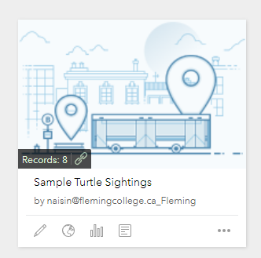
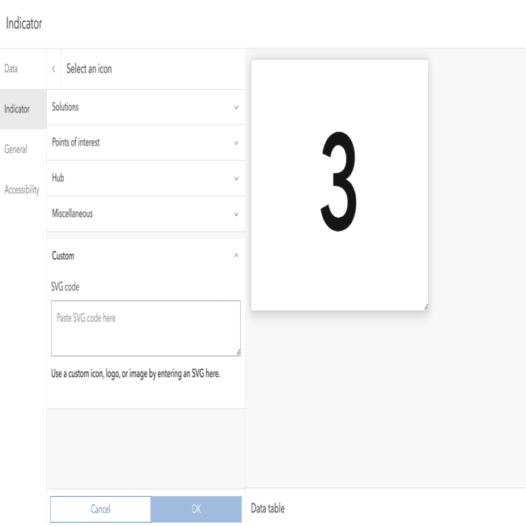

Linking ArcGIS Survery123 and Dashboard
If we happened to have a form where we can report down information like how many turtles you see on a road and in what condition. Then, there's a big screen that shows this information in a cool way, like on a map or in a graph, with all the informative statistics. When we fill out the form, the screen updates automatically to show the new information right away. This can what happen when we link the form (Survey123) and the screen (dashboard) together. We learned, that way, we can make sure everyone sees the latest information as soon as it's reported down.
Here, we have an existing Survey123 form that is conveniently accessible through the link above. Clicking on the link will take us straight to the website where we can access the form using our organization's login credentials. This form is designed to gather specific information efficiently and securely, streamlining the data collection process for our project.
We are presented with this interface when our turtle survey form is clicked upon, and by clicking on the Collaborate tab on top, we can access and adjust various settings as needed. But most importantly, for our specified purpose, we select "PUBLIC" to who we choose to submit the form.


In AGOL (ArcGIS Online)Make the hosted feature layer of the form public by enabling public data collection in the Settings tab of the hosted feature layer item. Making the hosted feature layer of the form public and enabling public data collection in the settings tab allows anyone, including those without specific log-in credentials, to access and submit data to the form. This can be useful for gathering information from a wider audience or for making the form more accessible for general use.

.png)
Now, here's an example of how the dashboard content pane looks like with the existing form. It includes all the reported attributes from the form and has a Turtles Count as an overall count to all the reportings being made. But if we do not do the linking at all and let it be as an independent Dashboard, it'll only give us the saved data from our own shared dataset while building this Dashboard. Even if it is connected with the form's submitted data, it only exists with the latest data used to make the Dashboard from scratch. No way we can view any live update of the form here, unless . . . we follow what I'm implying here.

Let's fill up the form as a random user (Daffy Duck a.k.a Celebrity Moment) who is reporting from San Francisco.

After submitting it, we return back to our Dashboard and refresh the webpage instance.
And . . .
VOILA!

THIS WAY WE CAN SKIP THE MIDDLE-MAN JOB. WHO LIKES IT ANYWAY?
ArcGIS Dashboard
DashboardDashboard text & screenshots (*Include that heat map didn't work with slider)
We learned how to utilize layer views in our Dashboard, by filtering fields we wanted to keep anonymous and creating a study area to limit the data shown on the web map. We hid fields like name and email, as well as the automatic fields added by Esri. As well, we drew a polygon around Ontario so any turtles sighted outside could be reported but would not be shown.

You can see that the layer view worked because when querying the layer in the REST Endpoint, it shows 10 results, or 10 turtle sightings.

When looking at the Dashboard itself, it only showing 9 turtle sightings, because one of them was in the U.S., so the layer view filters this from the map.

Custom Icons on Dashboards
A cool tool we leaned was creating custom icons inside of Dashboard indicators using free SVG files. To create these icons all you have to do is go into the "Indicator" tab and click on the "Add icon", inside you will have the option to choose a custom icon. This is where you insert the SVG code that connects to your icon, to get this just download the SVG file and open its page source to get the code. Below is an example of what the workflow looks like in Dashboard.
Stacking Element on Dashboard
There is a visualization trick in Dashbaord that allow your to stack elements together like graphs, indicators, and gauges into one element. Each element added gets its own tab that the user can rename. This allows the user to add more information onto the Dashboard since it reduces space. This can be done by adding new elements on top of each other and holding "Shift", this will stack them togeher within the same space. Below is an examaple of the workflow within Dashbaord.
ArcGIS StoryMaps
Custom Theme
To make our ArcGIS StoryMap we first made a custom theme called 'Turtles', which used the same colour as the bottom of the header. This allowed our StoryMap to flow smoothly rather than having a harsh divide between elements.

We also used a custom separator to fit our overall message, making sure to have a transparent background so it blends in seamlessly.

Interactive Maps
Our StoryMap has a map tour and an embedded web map from the results of our Survey123 form, letting the user move around and interact with specific points to get more information.


Embedded Link Cards
We embedded our other solutions (Survey123 form, Dashboard, and web map), so that users could easily click on the cards and see how the different solutions could be combined.